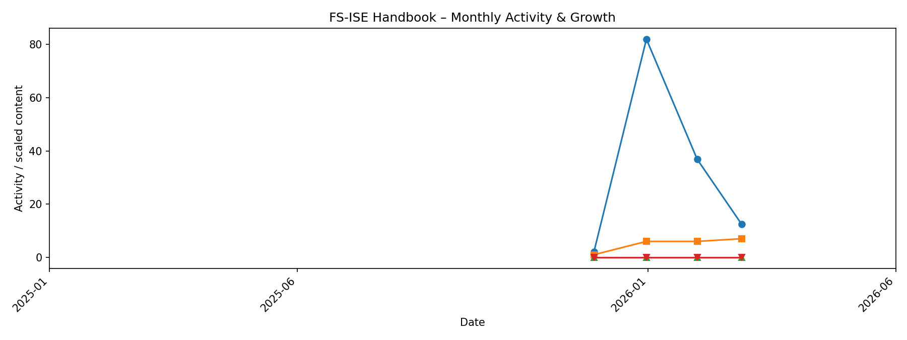

flowchart TD
subgraph GH[GitHub Actions]
A[Link checker workflow</br>Cronjob]
end
subgraph HB[Handbook repository]
A --> SCAN[Scan all handbook pages<br>Extract links]
SCAN --> SPLIT{Classify links}
SPLIT -->|Internal links| INT[Check internal links</br>Relative paths and anchors]
SPLIT -->|External links| EXT["Check external links</br>Based on <a href='https://github.com/lycheeverse/lychee' target='_blank'>lychee</a>"]
end
INT --> R1["<a href='https://github.com/fs-ise/handbook/issues/5' target='_blank'>Broken internal links report</a>"]
EXT --> R2["<a href='https://github.com/fs-ise/handbook/issues/4' target='_blank'>Broken external links report</a>"]
Handbook
This handbook is designed to support collaboration and effective learning in our lab. It reduces friction and helps us focus on the work that matters most. Key advantages include:
- Reduced search and communication overhead: Information becomes easily discoverable instead of relying on individual memory or repeated explanations.
- Faster onboarding: Students, assistants, and new collaborators can quickly understand expectations, tools, and workflows.
- Standardization and clarity: Consistent processes and formatting support a reliable, high-quality way of working.
- Support for stigmergic collaboration: Like in open-source projects, visible contributions encourage further improvements and self-organizing progress over time.
- Sustainable knowledge retention: Guidance remains accessible even when responsibilities shift or team members move on.
- Shared learning across labs: We adopt proven practices from others and offer our own experiences openly, strengthening the broader community.
“Civilization advances by increasing the number of things we can do without thinking about them.” — Alfred North Whitehead
By documenting what works, we make everyday tasks simpler and leave more room for creativity, collaboration, and discovery.
NoteLinking
Linking is a core practice, not an afterthought. This handbook is most useful when it works like a map:
- Link to other handbook pages instead of duplicating content.
- Link to the systems where the work happens (e.g., GitHub repositories, issue trackers, course pages, calendars, templates).
We also maintain automated link checks and quality controls (linters/statistics) to reduce link rot and ensure references remain usable.
NoteReports and automation
We keep key parts of the handbook up to date automatically using GitHub Actions workflows and Python scripts.
- Workflows: https://github.com/fs-ise/handbook/tree/main/.github/workflows
- Scripts: https://github.com/fs-ise/handbook/tree/main/src
These jobs retrieve external data to regenerate report artifacts (tables, pages, figures) and commit updates back to the repository.
flowchart TD
subgraph RUN[GitHub-hosted Actions]
WR[Daily workflow]
MR[Monthly workflow]
end
subgraph SCRIPTS[src/ scripts]
R1[update_repositories.py]
R2[generate-projects-pages.py]
R3[update_talks.py]
R4[...]
R5[research_statistics.py]
end
subgraph OUT[Handbook outputs]
O1[Pages and data updated]
O2[assets/reports regenerated]
end
WR --> R1 --> OUT
WR --> R2 --> OUT
WR --> R3 --> OUT
WR --> R4 --> OUT
MR --> R5 --> OUT
NoteEmergence
Our handbook follows an emergent logic: we improve it continuously through small contributions, iteration, and learning by doing.
A good reference point is The Turing Way’s framing of emergent strategy and living guidance.
How our handbook evolves

NoteSingle source of truth
For anything that must be correct and consistent over time (e.g., course offerings, teaching dates, presentations, research projects, paper lists, lab processes), the handbook should be the single source of truth.
Rule of thumb: If a date, decision, or list appears in multiple places, we should consolidate it here (or have one canonical source and link to it from here).
How to suggest changes
- Navigate to the page you would like to change.
- Click on “Edit this page,” sign in, and then click the “Edit this file” button.
- Add your changes in GitHub markdown.
- Commit the changes to a new branch.
- Assign the maintainer to review and merge your changes.
Note on deployment: The handbook is hosted on GitHub Pages. The deployment may take a few minutes to complete. You can check the status here.
Principles
- Confidential data: Confidential data, such as grades and student identities, must not be stored in the handbook. Instead, add a link to the confidential data store (see example).
- Checklists: Checklists should be simple, structured, and actionable.
- Add links: Add links to other parts of the handbook or external resources to avoid replicating content.
- Headings: Use sentence case (not title case) for all headings and subheadings.
- Consistency: Maintain consistent formatting throughout the document, particularly for lists, tables, and citations.
- Formatting resources: Formatting resources are available in the Quarto Guide.
NoteExample page
Important
Each sentence should be on a new line (to ensure that the git diff is readable). To create a paragraph, add an empty line. This makes the history more readable and merging easier (see semantic line breaks).
---
title: "Title of the page"
bibliography: ../data/references.bib
csl: ../assets/apa.csl
nocite: |
@WagnerPrester2025
---
Text with illustrations/figures/screenshots:

Note: Copy and adapt the path as needed.
A [link](https://website.com){target=_blank} that opens in a separate window.
<!-- Comments can be used to add further explanations, links to references/resources, or to keep parts of the paper that were shortened -->
An in-text citation: @Webster2002 (the BibTeX entry must be added to data/references.bib and the YAML header updated accordingly).
Callouts (colored boxes, as illustrated below):
::: resource
We use the `resource` callout when resources (external to the handbook) are available.
:::
::: confidential
Confidential data is stored on the [Nextcloud](http://url.com){target=_blank}.
:::
::: callout-important
An important callout (important could also be replaced by note, warning, tip, caution; see [quarto-docs](https://quarto.org/docs/authoring/callouts.html){target=_blank}).
:::
ResourceResource
We use the resource callout when resources (external to the handbook) are available.
ConfidentialConfidential
Confidential data is stored on the Nextcloud.
Important
An important callout.
Graphs can be included as Mermaid diagrams (see Mermaid live editor).
Navigation is updated in _quarto.yml.
- Terminology:
| Preferred term | Not this |
|---|---|
| SuSe / WiSe | SS / WS |
| Team assistant | Secretary |